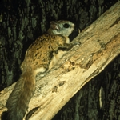

Graham County
 |
Appalachian ElktoeScientific Name: Alasmidonta ravenelianaFound in Graham, Haywood, Henderson, Jackson, Macon, Mitchell, Swain, Transylvania, and Yancey counties. |
|  | Carolina Northern Flying squirrelScientific Name: Glaucomys sabrinus coloratusFound in Avery, Buncombe, Caldwell, Graham, Haywood, Henderson, Jackson, McDowell, Mitchell, Swain, Transylvania, Watauga, and Yancey counties. |
 |
Indiana BatScientific Name: Myotis sodalisFound in Cherokee, Graham, Haywood, Rutherford, and Swain counties. |